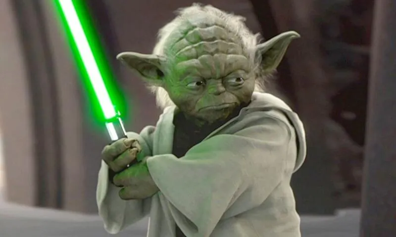

JediYoda
Es un personaje ficticio del universo de Star Wars, era uno de los más renombrados y poderosos maestros Jedi durante toda la historia de la Galaxia, y uno de los pocos Jedis de la República Galáctica en sobrevivir hasta la Guerra Civil Galáctica